PORTFOLIO
-
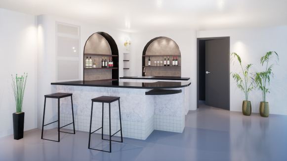
- 제주 호근동 가정용 바
- #집에서 즐기는 바
- #붙박이수납
- #거실일부
- #손님접대공간
-
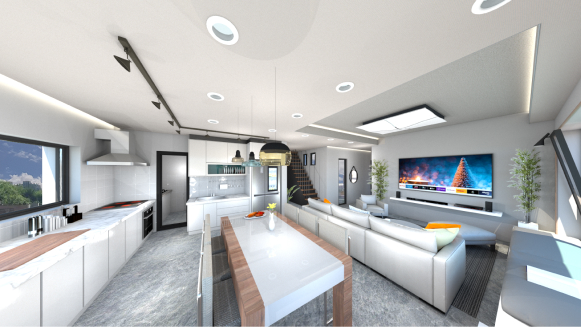
- 염리동 다세대주택
- #201호~501호
- #501호 주인집
- #채광좋은 집
- #보조주방
-
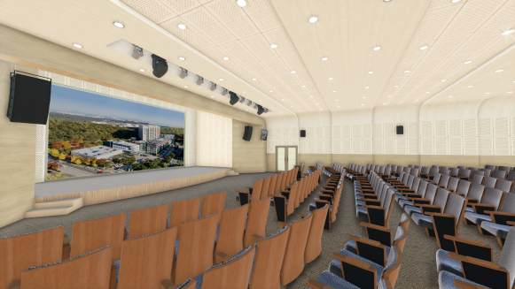
- 일산병원 강당 리모델링
- #대강당
- #삽입형 대형스크린
- #밝게 리모델링
- #곡선천장마감
-
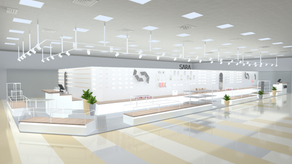
- 백화점 신규브렌드 SARA
- #트렌디함
- #여성을 위한
- #충분한 수납공간
- #쇼케이스,거울 제안
-
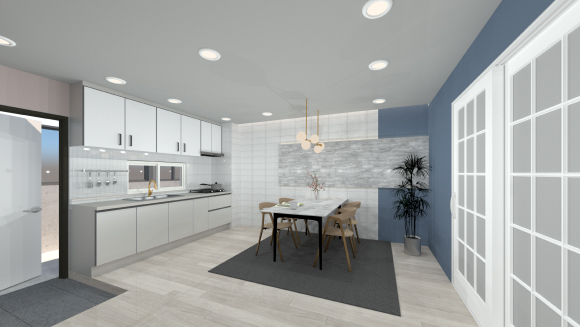
- 복도식 주거공간 인테리어
- 면적 : 000㎡
- #제작 능력치
- #구역별 컬러
- #3식구
-
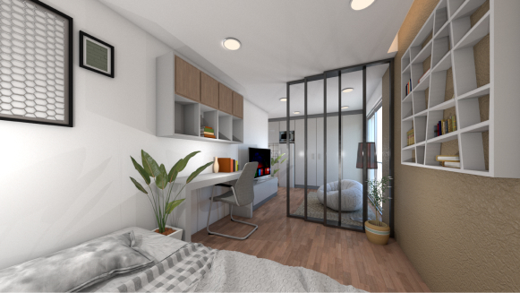
- 염리동 다세대주택
- #2층~4층 원룸
- #채광좋은 집
- #붙박이장
- #중문
-
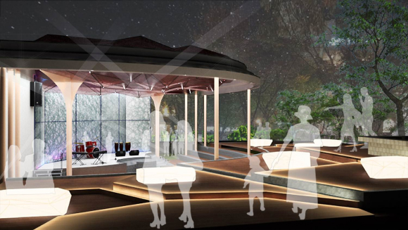
- 대학교 졸업작품
- #yes, go more re
- #음악 복합센터
- #야외공연장
- #뛰는 심장패턴
-
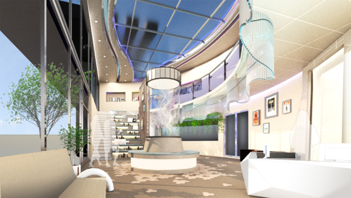
- 대학교 졸업작품
- #yes, go more re
- #음악 복합센터
- #1층로비
- #악기 형상화
-
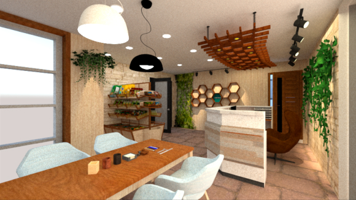
- 대학교 서브 졸업작품
- #It, lost
- #애견용품샵
- #수제제작가능
- #연결된 주거공간
-
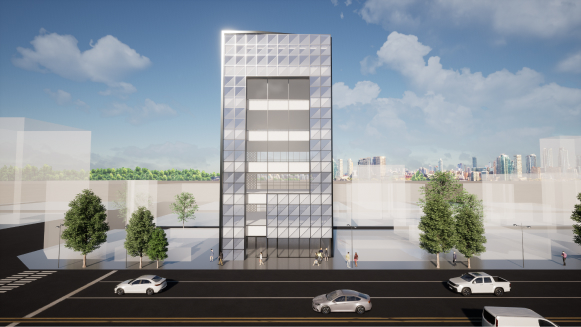
- 수유동 근린생활시설
- #신축공사
- #굴곡유리
- #지구단위구역
- #뒤쪽으로 주차가능
-
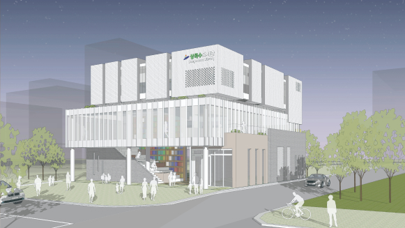
- 상록수 도서관 현상설계
- #솔담터
- #수직루버
- #열린공간
- #계단형 도서관
-
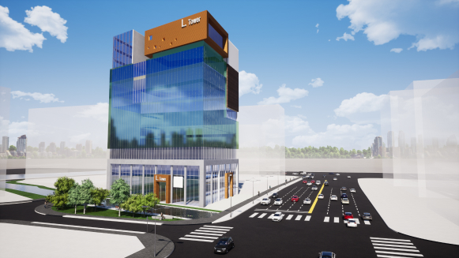
- 용인역삼지구 상업시설
- #약414평
- #개발계획
- #접근성높은
- #각진대지
-
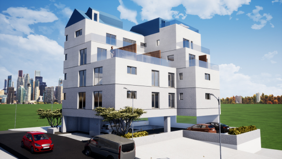
- 염리동 다세대주택
- #약103평
- #채광극대화
- #협소한 공간
- #16세대
-
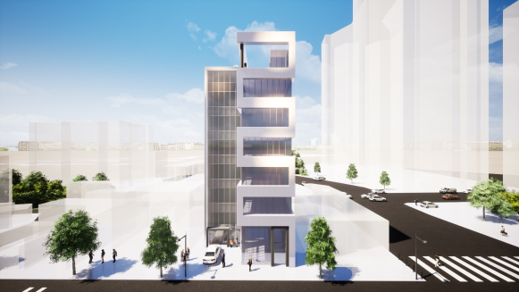
- 용강동 상업시설
- #약207평
- #2종근생
- #건물특색패턴
- #코어분리
-
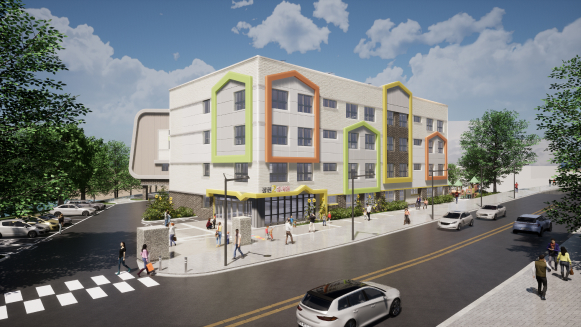
- (가칭)장현2유치원
- #평지붕
- #옥상 태양광
- #13학급
- #봄같은 따스함
-
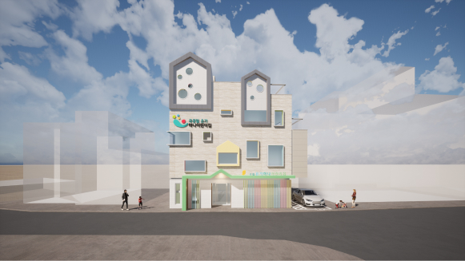
- 서대문 은가하나 어린이집
- #경관심의
- #집모양 디자인
- #포켓공간
- #무지개 컬러
-
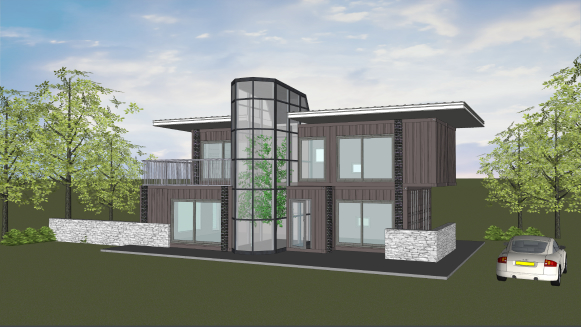
- 제주 호근동 단독주택
- #자연녹지지역
- #중정
- #컨테이너
- #5세대
-
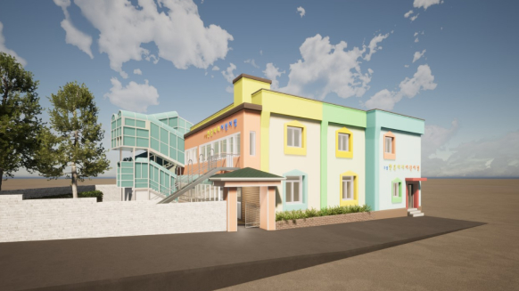
- 그린리모델링 한울타리어린이집
- #단열강화
- #현장답사
- #천장철거
- #리모델링
-
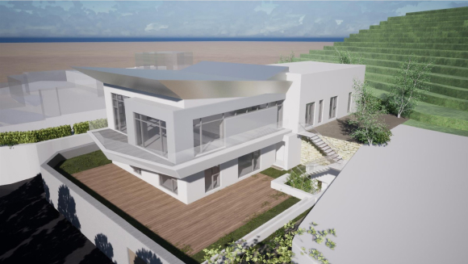
- 제주 협재리 단독주택
- #자연녹지지역
- #약75평
- #1층은 손님접대공간
- #예술활동
-
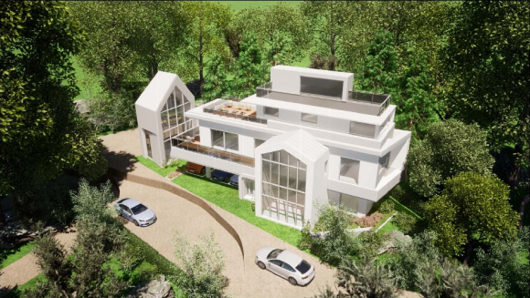
- 평택당현리 타운하우스
- #자연취락지구
- #근생시설
- #인근 51세대
- #공용 홀
-
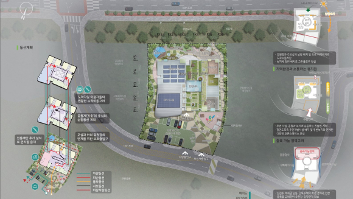
- 경상남도 신진주유치원 현상설계
- #지역소통
- #한정된 접근로
- #증축가능
- #포켓담터
-
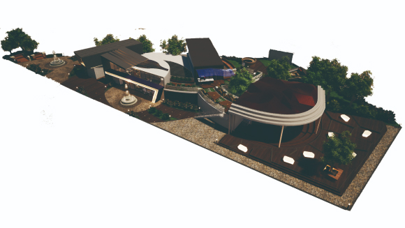
- 대학교 졸업작품
- #yes, go more re
- #음악 복합센터
- #어긋난 패턴
- #오픈공간
-
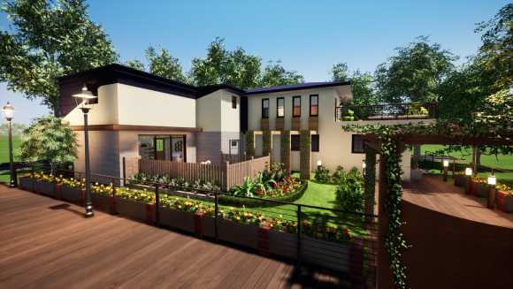
- 대학교 서브 졸업작품
- #It, lost
- #애견용품점
- #2층은 주거공간
- #애완견과 어우르는
-
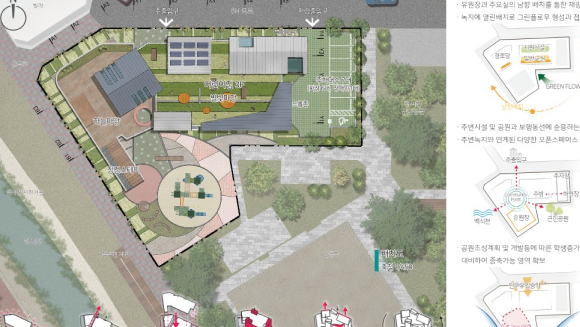
- 하나금융 국공립어린이 현상설계
- #경로당과 옥상정원
- #외부계단
- #총200명내외
- #인구증가 대비
-
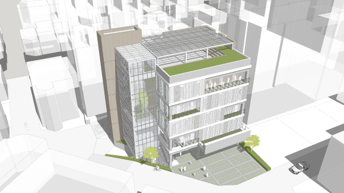
- 부평5동 행복센터 현상설계
- #밀착형 옥외마당
- #3면도로
- #충분한 주차계획
- #레벨차 계획
-
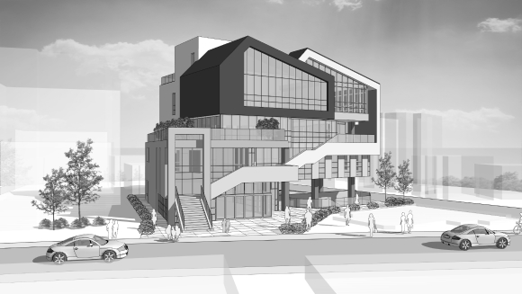
- 응암 정보도서관 현상설계
- #복합문화공간
- #개방과 소통
- #썬큰설치
- #외부 연결통로
-
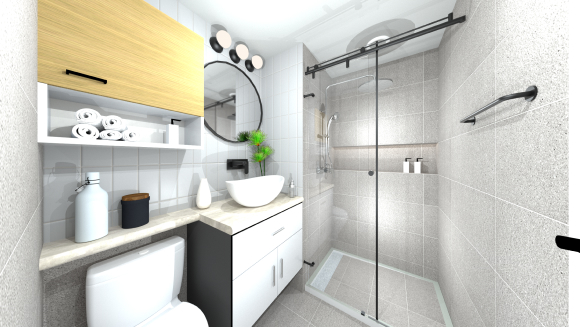
- 김포 한강도시 지식사업센터
- #준주거지역
- #인테리어
- #화장실 2안
- #탐카운터형
-
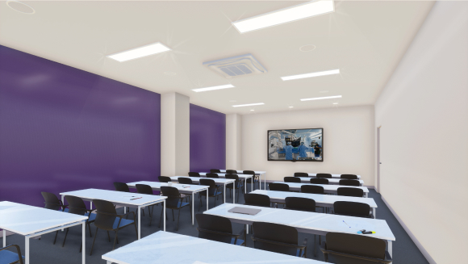
- 일산병원 세미나실 리모델링
- #36석
- #밝은 컬러
- #LED대형 스크린
- #포인트 컬러
-
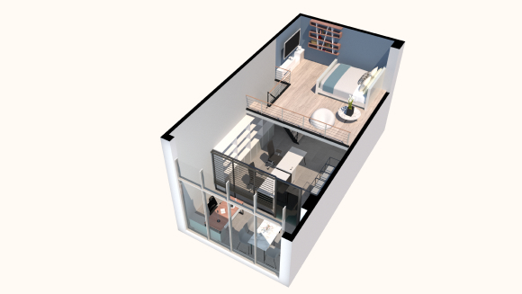
- 김포 한강도시 지식사업센터
- #준주거지역
- #인테리어
- #type 2가지
- #2층침실
-
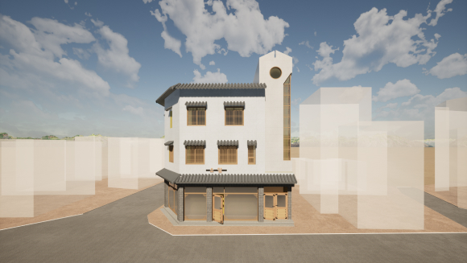
- 반죽동 계량한옥 리모델링
- #기와, 창 변경
- #기존형태유지
- #한옥동네
- #마감재 변경
-

- 카페누루이
- 사이트 방문하기 >
- #cafe nurui
- #누룽지
- #언젠가 오픈
- #캐릭터만들기
-
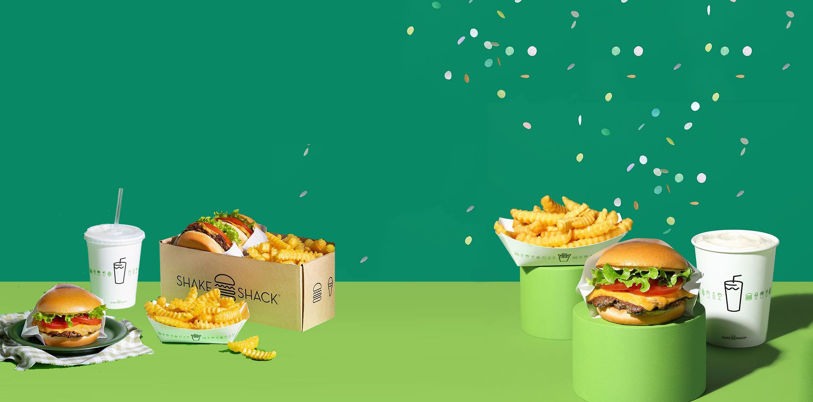
- (미완성)SHACK SHACK 리뉴얼
- 사이트 방문하기 >
- #SHACK SHACK
- #
- #
- #
-
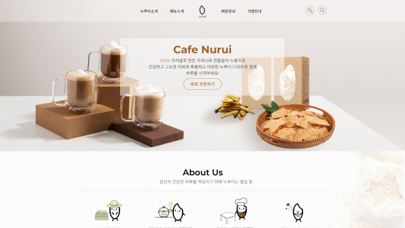
- (미완성)마이펫의 이중생활
- 사이트 방문하기 >
- #애니메이션
- #
- #
- #
-
- (미완성)It 그것
- 사이트 방문하기 >
- #공포영화
- #
- #
- #
-
- (미완성)Danaham 디자인다나함
- 사이트 방문하기 >
- #기업홈페이지
- #인테리어,건축
- #
- #
-